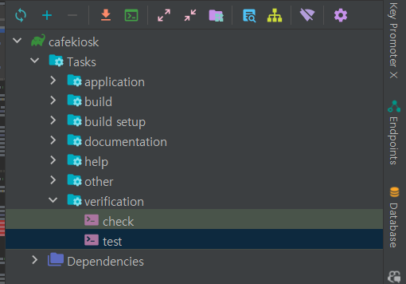

테스트 환경 통합하기
사람이 수동으로 검증하는 비용보다 기계의 도움을 받아서 수시로 피드백을 받고 프로덕션 코드를 발전할 수 있는 도구가 테스트입니다.
전체 테스트 코드 실행

제외하기
@Disabled를 추가하면 해당 테스트는 전체 테스트에서 제외됩니다.
실행 횟수
Controller단위 테스트를 위한WebMvcTest로 인한 스프링 컨테이너 동작Service통합 테스트를 위한@SpringBootTest로 인한 스프링 컨테이너 동작Repository단위 테스트를 위한DataJpaTest,SpringBootTest로 인한 컨테이너 동작
스프링 컨테이너를 사용하는 테스트마다 새 스프링 컨테이너가 초기화 되면서 톰캣이 매번 실행됩니다.
테스트를 수행할 때 발생하는 비용이 많아지게 되고 테스트는 오래 걸리기 때문에 자주 수행할 수 없게 됩니다. 테스트의 비용도 프로덕션 코드와 같이 수행이 되면서 관리가 되어야 합니다.
스프링 컨테이너 횟수 줄이기
@SpringBootTest를 사용하더라도 컨테이너를 구성 정보 클래스나,빈 오브젝트, 환경 변수등이 조금이라도 달라진다면 스프링 컨테이너는 별도로 뜨게 됩니다.
그러면, 스프링 컨테이너에 사용되는 공통적인 환경을 모아서 사용한다면 서버가 뜨는 시간을 줄일 수 있습니다.
상위 클래스로 추출하기
상위 추상 클래스로 만들고, 공통적으로 사용할 환경을 설정합니다.
MockBean 사용시 주의사항
@MockBean은 스프링 컨테이너에 Mock역할로 가짜 객체를 등록하게 됩니다.
다른 SpringContainer와 다르게 Mock MailSendClient가 대체되기 때문에 새로운 스프링 컨테이너가 동작하게 됩니다.
통합테스트 환경 통합하기
통합 테스트를 사용하는 서비스 계층들의 스프링 컨테이너를 통합하는 방식입니다.
해결 방법 2가지
추상화 클래스에 MockBean을 추가합니다.
@ActiveProfiles("test") @SpringBootTest public abstract class IntegrationTestSupport { @MockBean protected MailSendClient mailSendClient; }같은 스프링 컨테이너를 사용하는 테스트 클래스는 `MailSendClient`대신에 MockBean을 사용해야합니다.
Mocking이 없는 스프링 컨테이너를 사용
@ActiveProfiles("test") @SpringBootTest public abstract class nIntegratioNotMockTestSupport { }`Mock`을 사용하는 컨테이너 환경과, 사용하지 않은 환경을 나누어 서버를 두번 띄우는 방법이 있습니다.
리포지토리 컨테이너
리포지토리를 테스트하는 방법은 2가지 애노테이션을 사용합니다.
DataJpaTest와 같은 데이터 소스와 관련된 빈들만 컨테이너 사용SpringBootTest루트 구성정보를 활용하여 모든 빈 정보를 가진 컨테이너 사용
테스트 통합 방식 2가지
@DataJpaTest상위 클래스 추출하기@ActiveProfiles("test") @DataJpaTest public abstract class PersistenceTestSupport { }@SpringBootTest상위 클래스 재활용하기@ActiveProfiles("test") @SpringBootTest public abstract class IntegrationTestSupport { @MockBean protected MailSendClient mailSendClient; }
Presentation 통합하기
컨트롤러 계층은 MockMvc와 WebMvcTest를 사용하여 계층을 얇게 하여 테스트를 진행했습니다. 그래서 다른 계층에서 사용하고 있는 스프링 컨테이너와 통합하기 어렵습니다.
그래서 IntegrationTestSupport와 다른 환경을 구성해야합니다.
새로운 컨트롤러 계층을 테스트 하기 위해서는 상위 클래스로 찾아가 Controller.class를 추가하고, Mock 처리를 할 서비스 빈을 @MockBean으로 추가하면 됩니다.
정리
스프링 컨테이너를 사용하는 테스트들의 환경이나 빈, 구성정보를 통합하여 스프링 부트가 초기화하여 서버가 새로 뜨는 횟수를 줄여 테스트 코드의 비용을 줄일 수 있습니다.